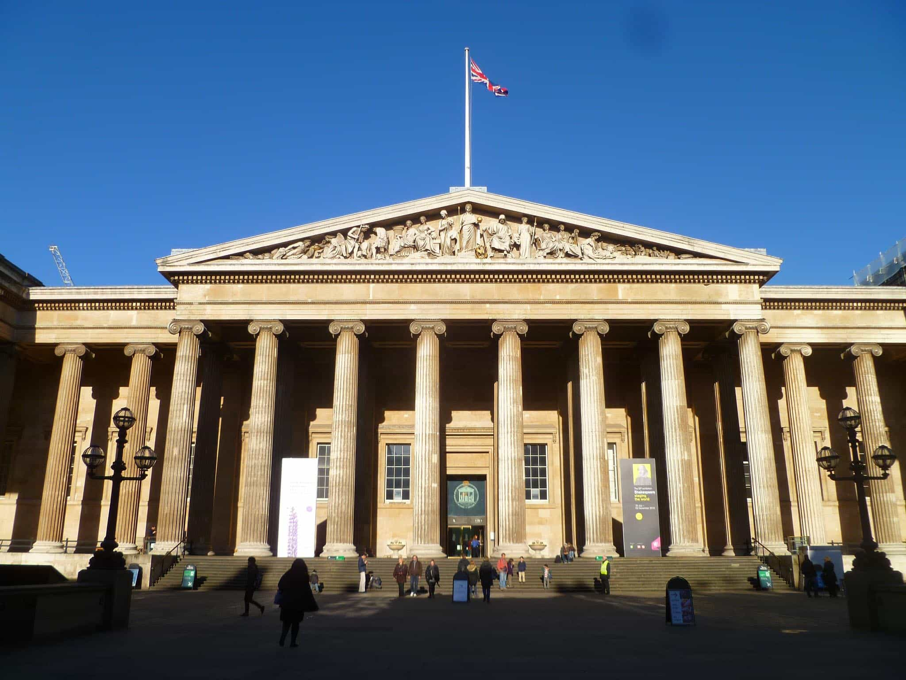

The British Museum
El Museo Brítqanico se fundó en 1735 y alberga antiguedades procedentes de Egipto, Roma, Grecia, Oriente Próximo y Asia. El edificio se empezó a construir en 1824, fue diseñado por Robert Smirke y hasta 1997 también era la sede de la Biblioteca Brítanica. seguramente sólo haya dos museos en el mundo comparables en la variedad y riqueza de sus colecciones: el Louvre de París y el Metropolitan de Nueva York